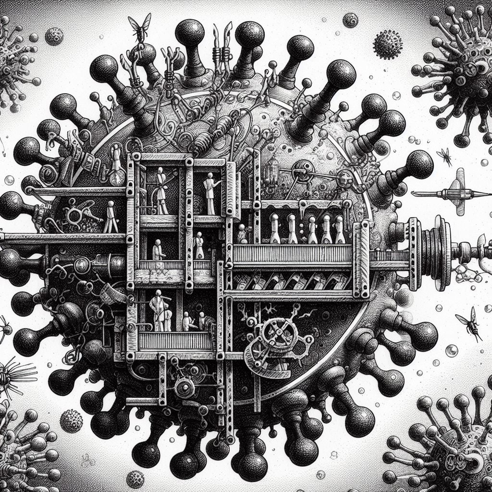

Michael O. DuffBiostatistics, Bioinformatics and Epidemiology ProgramVaccine and Infectious Disease Division Fred Hutchinson Cancer Research Center Seattle WA moduff@fredhutch.org
I'm a computational biologist focussed on B-cell repertoire dynamics in response to infection and vaccination.
Before joining the Hutch, I worked with Brenton Graveley's RNA biology / alternative-splicing lab at UConn Health Ctr,
contributing to the modENCODE and
ENCODE projects.
PhD: UMass Amherst, Computer Science, specializing in Reinforcement Learning theory and optimal adaptive control
(Andy Barto, PI). Postdoctoral fellowships: Gatsby Computational Neuroscience
Unit, University College London and the Institute for Genomics and
Bioinformatics, UC Irvine.
|